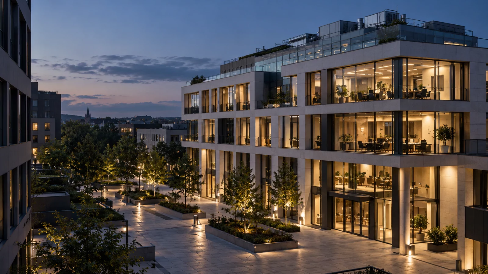

Rumanía
Voluntari, Ilfov
Complejo residencial

INSTALACIONES. COORDINACIÓN. EJECUCIÓN.
Instalaciones eléctricas, sanitarias y de climatización, coordinadas como un único proyecto. En Rumanía y Europa desde 2016.
EXPERIENCIA INTEGRADA
Desde la distribución de energía hasta el confort interior, tratamos las instalaciones como un sistema conectado. Aclaramos interfaces, secuencias y responsabilidades antes de la ejecución.
Energía bien distribuida. Espacios listos para usar.
Ver el servicioRedes bien planteadas, del suministro a la evacuación.
Ver el servicioConfort interior y sistemas adaptados al edificio.
Ver el servicioConectar requisitos, documentación y obra.
Ver el servicio
SOBRE VASTASIA
VASTASIA Consulting Group trabaja desde 2016 en Rumanía y a nivel internacional. Nuestra experiencia abarca proyectos residenciales, de oficinas e industriales en Rumanía, Alemania y Austria.
CÓMO TRABAJAMOS
Hablar de objetivos, estado actual y documentación disponible.
Acordar el enfoque, las responsabilidades y la oferta por especialidad.
Organizar el equipo y la secuencia de trabajos según la obra.
Completar las comprobaciones acordadas y documentar la entrega.
EXPERIENCIA EN EUROPA
Una selección de proyectos en Rumanía, Alemania y Austria. Respetamos la confidencialidad de los clientes y solo mostramos la ubicación y el tipo de proyecto.
Rumanía
Complejo residencial
Alemania
Espacios de oficinas
Alemania
Espacios de oficinas
Austria
Espacios industriales
VASTASIA CONSULTING GROUP
Cuéntanos la ubicación, el tipo de edificio y la fase del proyecto. Definiremos juntos el siguiente paso.